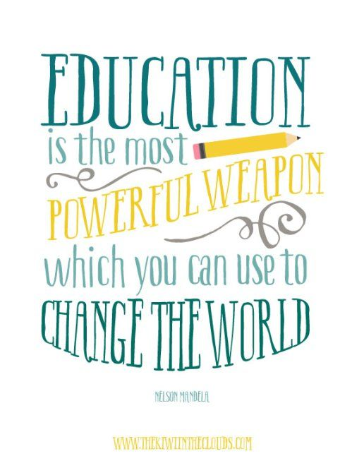

| Home | Leadership | Teaching and Learning | Instructional Design | Multimedia Development | Professional Development | Resume |
|---|
|  | C-3: Technology Coaches create and support effective digital-age learning environments to maximize the learning of all students. C-5: Technology Coaches model and promote digital citizenship. |
|---|
| Course Artifacts | Field Experience Artifacts |
|---|---|
|
For our final project, our team developed an online course for Communication Research. This class was previously a traditional class setting, but with growing demand, the instructor wanted to open an online option for the course. We helped design and develop the course based on the ADDIE model described in our final paper. (Course: Instructional Design) |
Officer Presentation In order to present digital citizenship and safety to my students, I organized a presentation by a local officer to the fifth grade class. We knew that the students would eventually be getting their own district-issued computers that they would be able to take home to use. Since we cannot monitor these computers at home, we wanted them to be educated on the issues of privacy. I feel that these are additional lessons that the students need due to the technological advances that we face. In addition, I believe that this is a class that should be taught to the students in multiple settings to promote digital safety with students. |
|
The link above leads you to the online course we developed as our final project described in the above artifact. (Course: Instructional Design) |
This website is one that I utilize for parent communication and behavior tracking. The students can earn points for positive behavior and vice versa. However, one of the main benefits is a "Class Story" for announcements and the Message feature to chat with a parent directly. Many parents download this application to their cell phone and can communicate instantaneously. In addition, in recent updates, the website has also began to do a "Student Story" where the students can respond to prompts by typing or can record a video of themselves. They can also take photos of classwork they are proud of to show to their parents/teachers. |
|
This document was my original design for the current website you are viewing. It allowed me to gain direction while coding the final website. You can see in the document that I made a few minor changes to allow for a more professional look. (Course: Multimedia and Hypermedia) |
| Home | Leadership | Teaching and Learning | Instructional Design | Multimedia Development | Professional Development | Resume |
|---|
|
|
| Last Revised: April 2018 - ©Elizabeth Rinkes |